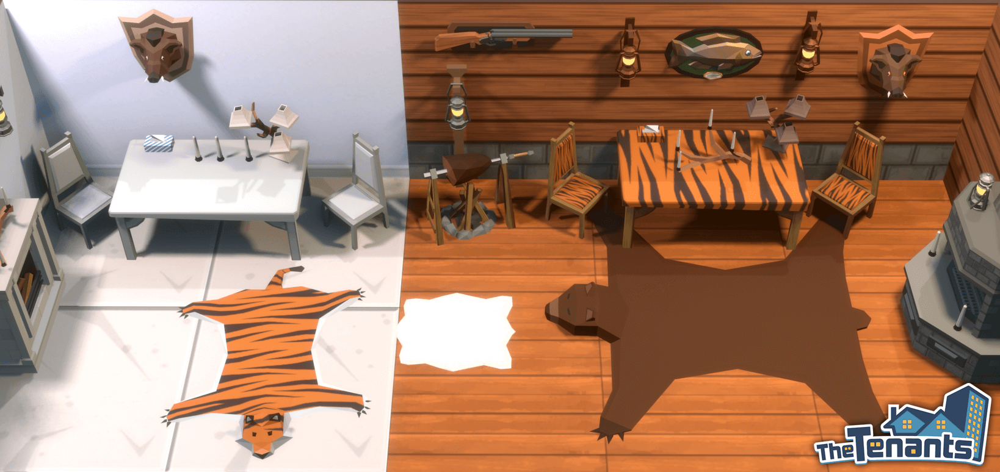
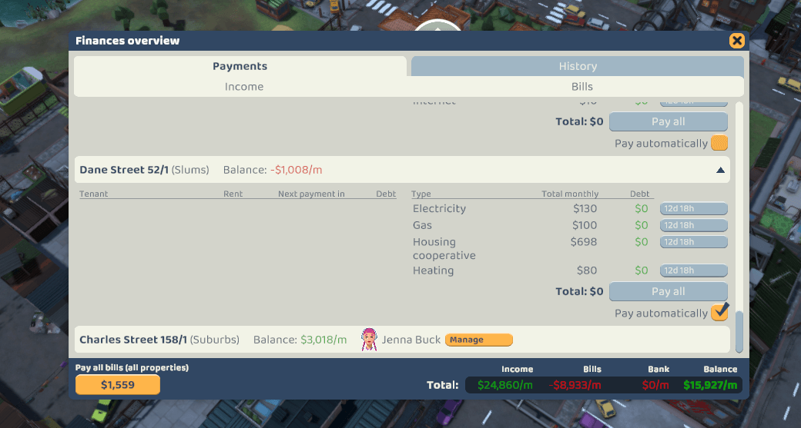
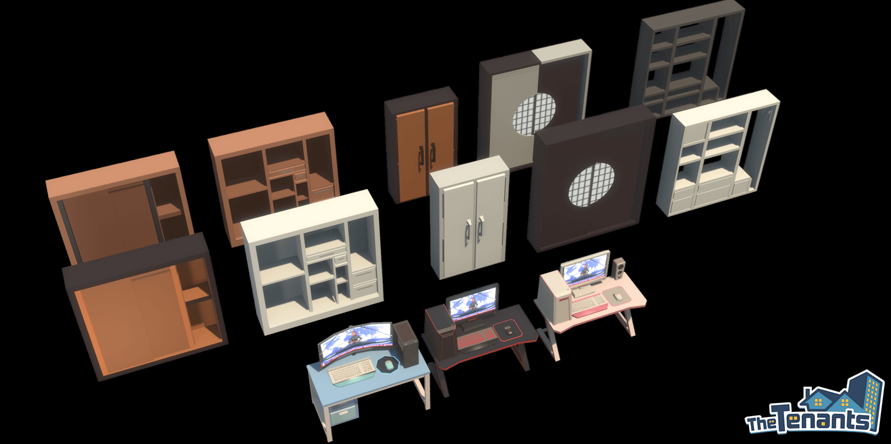
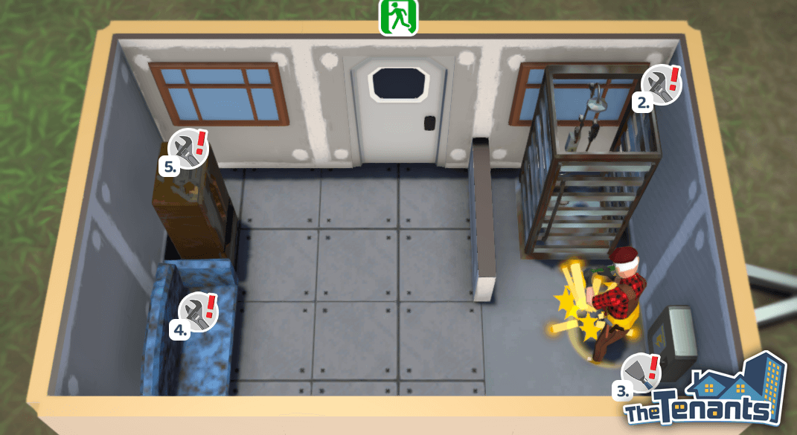

《The Tenants》—— 四月更新

《The Tenants》—— 四月更新
2021.4.28
房东们，你们好！
一如承诺，我们已携《The Tenants》的第一个大型更新——四月更新强势归来。我们花了不少时间，在本补丁内解决尽可能多的最为紧迫的问题，包括筛选手机通知，装修模式中的墙壁显示选项，以及一系列必要的平衡性改动。当然，我们也准备了一系列全新内容，供你们尽情尝试！接下来，我们将更详细地说说关于比较大的内容变动。
全新家具及职业正如我们在上一篇公告中提到的，四月更新将为本游戏带来超过 250 种全新物品、一系列新的职业，以及设计一个最精彩猎人小屋的精英合约（Elite Contract）。部分新内容会在游戏开头便为全部玩家开放，但我们还为游戏加入了 20 个全新关卡，内含最漂亮的全新宝藏。
如果你还没有加入我们的官方 Discord 服务器（邀请链接在此），不妨考虑现在就加入吧。因为上面提到的多数新物品都是根据玩家社群发表在专用建议频道中的想法添加的。这只是开了个头，无需多言，我们将在《The Tenants》的开发流程当中持续加入全新系列家具、材料以及职业。
财政面板更改每位房东将面对的最重要任务之一便是正确管理他们的财务状况。之前，游戏在财务面板中不会显示你每个区域的房产情况；我们当时天真地以为大量的信息将让屏幕变得拥挤，这样玩家只会觉得厌烦。事实证明，我们错了！
现在，财务面板中将简化显示由房产经纪控制的房产信息，让你可以一眼快速地查看你的全部财务情况。这样，屏幕底部的收入面板终于将把你的全部收入都计算进去了。另外，你现在可以通过按下一个全新的按钮，来简单地支付全部账单，而如果你不喜欢进行持续微操作，你甚至可以打开自动付款功能。
智能移位我们还想进一步优化玩家在游戏中花费最多时间的部分，那就是装修模式。有玩家抱怨很难顺利地将物品有条不紊地对齐放置。加入了智能移位功能后，现在摆放物品应变得更为简单，在整理讨厌的厨房台面时玩家应该不会抓狂了。简单说来，如果在移动物品时按住一个特定的按键，你的物品将自动置于壁橱墙面或置身于附近的家具，将如同魔法一般地预测你会将物品放置于何处。由于目前该功能仍处于实验状态，我们很期待能听到你们对此的想法！
 存档系统调整你们可能已经知晓这一点：于抢先体验阶段保证玩家的存档完整是一件不简单的事情，尤其是在整个游戏不断加入诸多全新功能并进行大量改动的情况下。尽管如此，我们的计划始终是只有在所有其他可能的解决方案都用尽的情况下，才会完全重置玩家的存档。因此，我们现在就来谈谈存档损坏的问题。游戏偶尔在保存的时候会宕机，这会让存档不可逆地损坏。于早些时候，我们引入了一个单存档备份功能，玩家可借此尝试手动恢复存档，前提是之前的存档尚未损坏。当然，和其他的临时解决问题的方案一样，使用该系统有一定困难，而且并非每次都能获得理想的结果。
而现在，游戏会先将存档保存至临时文件中，并只在确保存档没有问题之后，才替换主存档文件。除此之外，游戏现在将存储一系列之前产生的自动存储文件，而当紧急状况出现时，其将自动还原上一个能正常使用的存档文件。我们将一直关注这个全新的故障保险系统的潜在问题。
设置应用多数玩家们在论坛以及 Discord 服务器上，甚至于评测中都提到了屏幕上弹出的大量通知的问题，哪怕你只需要管理几个租户。我们决定通过在你的游戏内手机中加入一个全新的设置应用（Settings app）来解决此问题。在这里，你将能够精准地选择你想收到的通知种类。将来，我们将加入更多设置，让你可以进一步自定义你的体验。
墙壁显示模式在大众要求之下，我们为装修模式的界面加入了数个开关，让你可以在以下三种不同的墙壁显示模式中进行切换：
- 显示全部墙壁（Show all walls）——全部墙壁将被完全渲染，
- 智能隐藏墙壁（Smart hide walls）——只渲染面对镜头的外墙，
- 隐藏全部墙壁（Hide all walls）——全部墙壁均仅会被部分渲染。
另一个玩家社群众望所归的功能是让史蒂夫叔叔（Uncle Steve）可以按照队列逐个执行行动。我们很高兴地向你们报告该功能已被加入游戏，同时也进行了其他调整，应该可以让史蒂夫的粉丝们称心如意。
 平衡性改动游戏的平衡性将会是我们在游戏开发途中不断努力优化的内容之一。上个月我们花时间从各个角度分析了游戏中的经济要素，而在本更新中，我们将实装第一批大型平衡性相关改动。首先，也是最重要的一点是，我们想解决目前我们的财务模型中的不一致之处，让游戏中以及你能在游戏中赚取的金钱看起来不那么随意和随机。为此，我们已经重新平衡了全部的房产价格、账单数额、利润率，也重新制定了许多游戏中的算法，包括租金计算算法、客户评级的机制，以及经纪人谈判租赁延期的方式。
此外，为了降低滚雪球的可能性，我们还加入了所得税机制。别担心，这不会让你立刻破产，因为我们的税级与税率遵循一条温和的进展曲线，来确保游戏持续公平。
应该注意的是，于此更新前开始的游玩进程将因这些大量改动而变得更为不平衡。所以我们推荐你重新开始游戏来获取最好的体验！一批全新的玩家头像
我们想为玩家提供更多表达自我的方式，因此我们加入了大量全新头像供你们选择。尤其是我们收到了很多关于加入更多带胡须头像的请求，我们很高兴地回应了这个请求 :emote: 来看看下图中这些全新的头像吧。
祝大家万事如意！
《The Tenants》开发团队